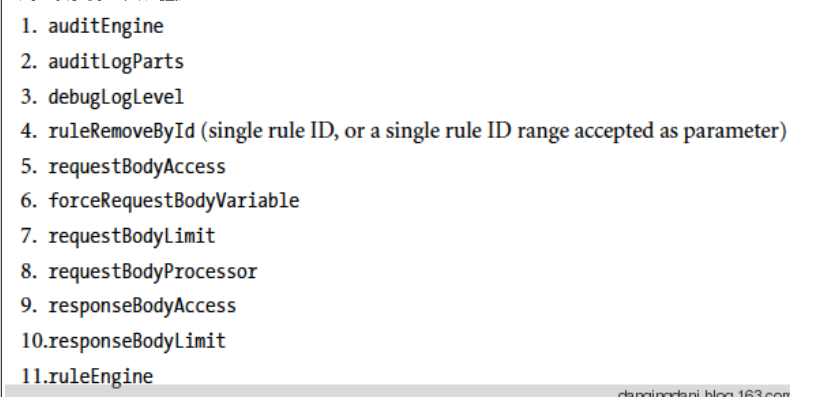

1、 modsecurity_crs_20_protocol_violations.conf
2、 modsecurity_crs_21_protocol_anomalies.conf
3、 modsecurity_crs_23_request_limits.conf
4、 modsecurity_crs_30_http_policy.conf
5、 modsecurity_crs_35_bad_robots.conf modsecurity_35_bad_robots.conf modsecurity_35_bad_scanners.conf
6、 modsecurity_crs_40_generic_attacks.conf modsecurity_40_generic_attacks.data
通用格式
SecRule VARIABLES OPERATOR [TRANSFORMATION_FUNCTIONS, ACTIONS]
1、阶段phase：
- 1)request headers
- 2)request body
- 3)response headers
- 4)response body
- 5)logging
五个阶段之间的关系：
2、变量
1)请求变量
2)SERVER变量
3)响应变量
4)请求体解析变量
5)实体变量
6)其他变量
3、操作符 operator
1)字符串操作符
@beginsWith
@contains
@containsWord
@endsWith
@rx
@pm 特征字符串的匹配， 大小不敏感，基于Aho-Corasick匹配算法
@pmFromFile 从文件读取匹配特征字符串
@streq
@within
2)数字操作符
@eq
@ge
@gt
@le
@lt
3)验证操作符
@validateByteRange
@validateDTD XML相关
@validateSchema XML相关
@validateUrlEncoding
@validateUtf8Encoding
4)其他类型操作符
@geoLookup
@inspectFile 使用外部脚本处理
@rbl 去RBL REAL-TIME BLANKHOLE LISTS反垃圾邮件黑名单里查找ipv4地址，或hostname
@verifyCC
3、事件函数transform function
base64Decode
base64Encode
compressWhitespace
cssDecode
escapeSeqDecode 解码ANSIC escape 序列
hexDecode
hexEncode
htmlEntityDecode
jsDecode
length
lowercase
md5
none 移除当前rule的所有transform function
normalizePath 移除掉多个斜杠
normalizePathWin 移除掉多个斜杠,但首先会将＼（ｗｉｎ正斜杠） 转化成 ／（ｌｉｎｕｘ反斜杠）
parityEven7bit
parityOdd7bit
parityZero7bit
removeNulls 删除空字节
removeWhiteSpace 删除空格字符
replaceComments 将ｃ格式的注视语句/.../转换为空格ASCII 32
replaceNulls 将null字节转换为空格ASCII 32
urlDecode
urlDecodeUni ｕｒｌ解码%uXXXX 编码范围ＦＦ０１ －ＦＦ５Ｅ
urlEncode
sha1
trimLeft 移除左边的空格
trimeRight 移除右边的空格
trim 移除左右两端的空格
4、动作action
1)disruptive action
每个rule只能有１个disruptive action，如果有多个disruptive action，那么只有最后一个有效，在rule chain中，disruptive action只能出现在第一个rule中
2)flow action
3)metadata action
4)variable action
5)logging action
6)其他action
ctl 改变当前事务的配置，可以改变以下配置
multiMatch 每次变量发生变化会进行一次匹配计算
t 在对变量作匹配操作前指定调用的事务处理函数
append 响应体中注入内容，该ａｃｔｉｏｎ必须开启ＳｅｃＣｏｎｔｅｎｔＩｎｊｅｃｔｉｏｎ指令
exec 执行外部脚本或二进制文件
pause 暂定事务处理
prepend 响应体中注入内容，该ａｃｔｉｏｎ必须开启ＳｅｃＣｏｎｔｅｎｔＩｎｊｅｃｔｉｏｎ指令
status action 为 deny与redirect action时指定响应码
xmlns XML专用
cloudflare 增加了以下action
disabled DIS exit_blocked(self, “DIS”, rulefile, nolog)
simulate SIM exit_blocked(self, “SIM”, rulefile, nolog)
5、指令directory
6、常用操作符
: 数组取值操作符 e.g. ARGS:p
! 非操作符 e.g. ARGS|!ARGS:z
@ 操作符函数调用 e.g. @rx
t 事务函数调用 e.g. t:lowercase
& 取数组个数符 e.g. &ARGS @ge 1
% {COLNAME.VARNAME}变量扩展符 e.g. SecRule REQUEST_URI_RAW “!@beginsWith http://%{REQUEST_HEADERS.Host}” “drop,tag:’WEB_ATTACK/ILLEGALHTTPPROTOCOL’,msg:’host header illegal’,id:00001,phase:2”